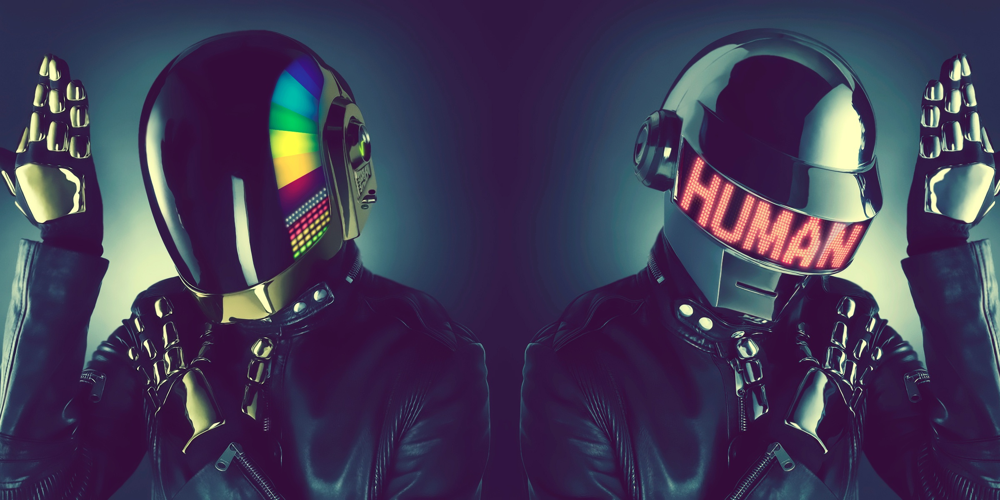

About Daft Punk
Daft Punk makes amazing music! Daft Punk are a French electronic music duo formed by Guy-Manuel de Homem-Christo and Thomas Bangalter. They combine elements of house music with funk, techno, disco, rock and synthpop. They have worn ornate helmets and gloves to assume robot personas in most public appearances and are rarely seen without them in public.
Daft Punk Robots
Daft Punk's Most Iconic Songs
- "One More Time"
- "Harder, Better, Faster, Stronger"
- "Around the World"
- "Digital Love"
- "Get Lucky (ft. Pharell Williams & Nile Rodgers)"
- "Da Funk"
- "Aerodynamic"
- "Crescendolls"
- "Robot Rock"
- "Something About Us"
- "Revolution 909"
- "Human After All"
- "Instant Crush (ft. Julian Casablancas)"
- "Starboy (ft. Daft Punk)", The Weeknd
- "Touch (ft. Paul Williams)"
Daft Punk's Albums
Daft Punk has some truly amazing projects. These are my rankings for my favorite Daft Punk albums, including their OST and live albums. Click on the links below to listen to them on Spotify!